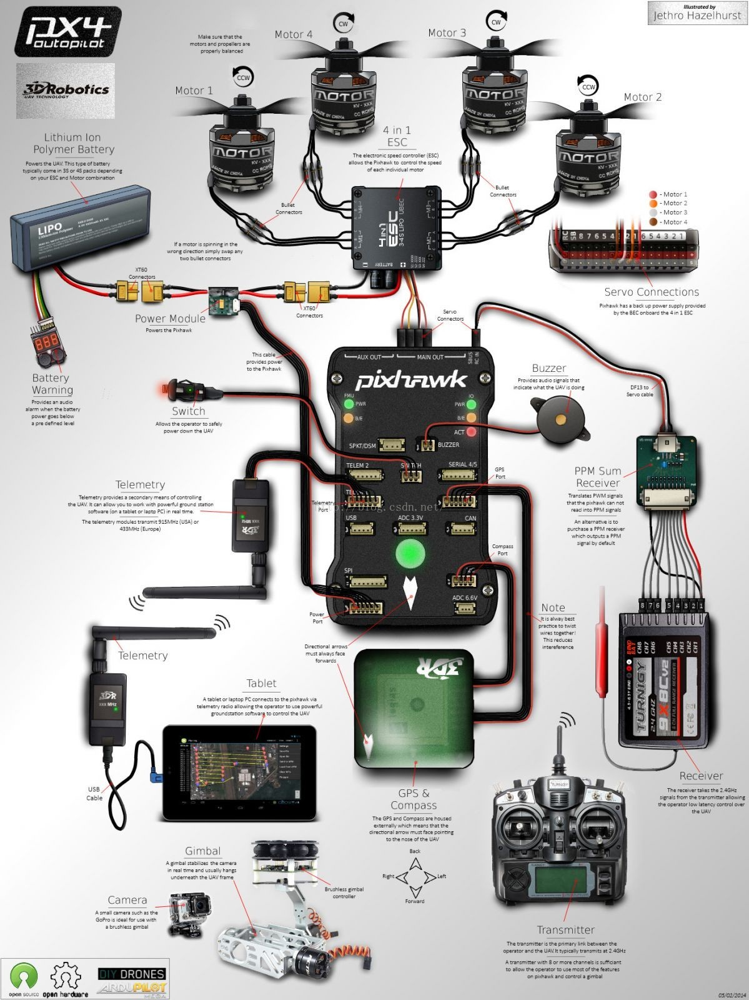
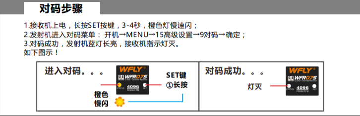
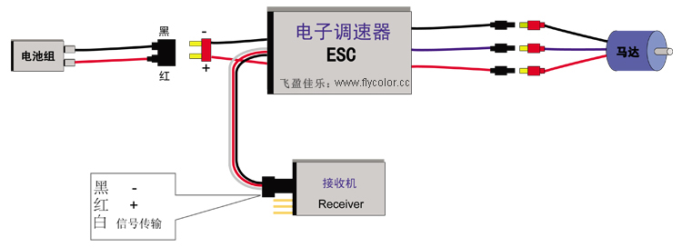

四旋翼无人机制作简易教程
四轴飞行器又称四旋翼、四转子，是一种多轴飞行器，有四个旋翼来悬停、维持姿态及平飞。和固定翼飞机不同，它通过旋翼提供的推力使飞机升空。它的四个旋翼大小相同，分布位置接近对称。对于简单的设计来说，仅仅通过调整不同旋翼之间的相对速度来调节不同位置的推力，并克服每个旋翼之间的反扭力矩，就可以控制飞机维持姿态、或完成各种机动飞行。下面简单介绍四旋翼无人机的制作过程。
无人机硬件装配
组装一件无人机所需配件及其连接示意图如图1所示。

所需配件主要有：
- 机身骨架
- 一对正浆和一对反浆。注意浆的固定方向与电机旋转方向要一致。
- 遥控器及接收机
- 无刷电机及电调
- ppm sum receiver
- pixhawk 1，内含安全开关和蜂鸣器
- gps
- 锂电池
- 云台和摄像头（可选）
- telemetry无线收发装置与图传（可选）
无人机软件调试
遥控器与接收机之间对码
遥控器和接收机之间是配对的，使用之前必须对码，可根据遥控器的使用说明书进行操作。其连接示意图如图2所示。

电子调速器的油门行程和进角设置
电子调速器主要控制马达的转速，其调试连接示意图如图3所示。

如图3所示将电子调速器连接后，即开始设置油门行程和电子调速器进角。设置油门行程即让电子调速器知道遥控器的油门输入范围。而电子调速器进角有高中低之分，类似于汽车档位。低进角速度慢但扭力大，高进角速度快但扭力小，一般设置电子调速器中进角即可满足大多数要求。具体设置说明参照电子调速器使用说明书。
pixhawk飞控平台的设置
Pixhawk是PX4飞行堆栈的标准微控制器平台。在pixhawk硬件平台上可运行PX4和ArduPilot两种不同的自动驾驶仪软件套件。如果在pixhawk平台上安装px4自驾仪软件，则使用QGroundControl地面站软件进行设置；如果在pixhawk平台上安装ArduPilot自驾仪软件，则使用MissionPlanner地面站软件进行设置。
Pixhawk和GPS按照方向捆绑好后，按照地面站软件的指示进行设置。设置好之后，长按Pixhawk的安全开关，再将遥控器油门拉动底并推向最右方，即可解锁Pixhawk。
参考链接
- 四轴飞行器,by wikipedia.
- PX4 autopilot, by px4 homepage.
- Crazepony开源四轴飞行器,by crazepony.
- ArduPilot,by wikipedia.
- PX4 autopilot,by wikipedia.
- 从建模分析到控制器设计，四轴飞行器是怎样炼成的？,by 机器人.